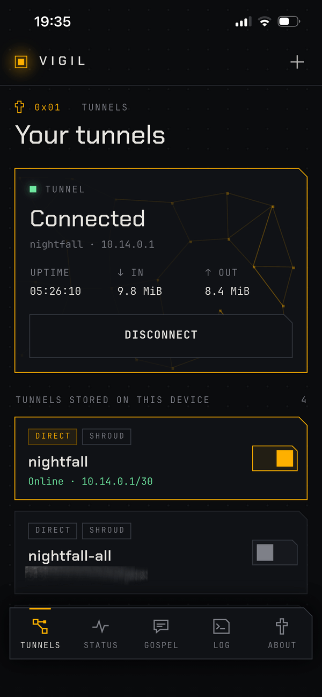
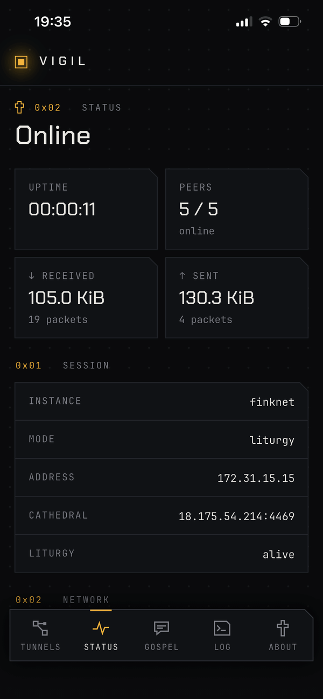
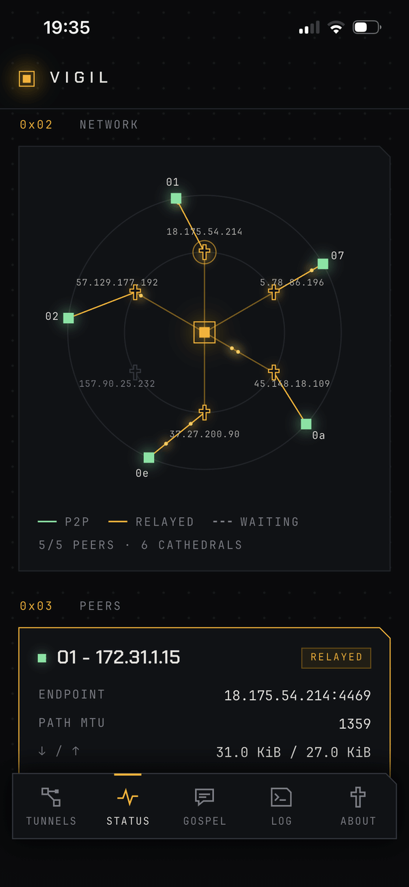
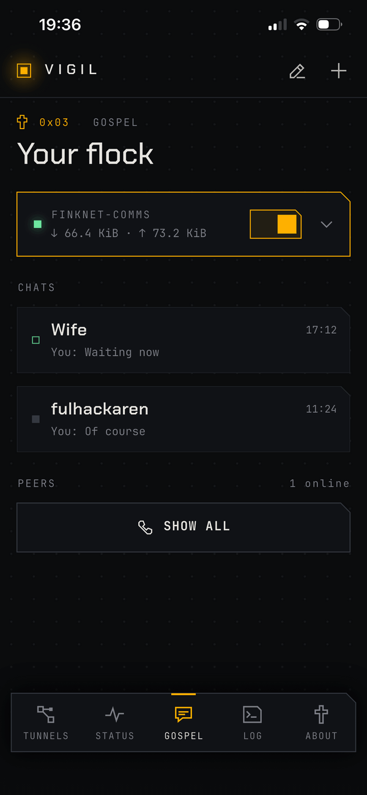
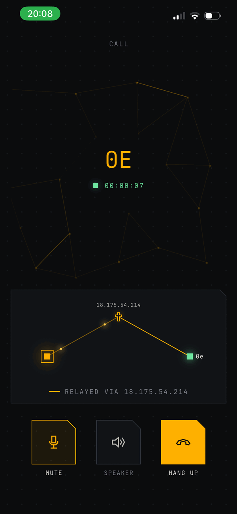
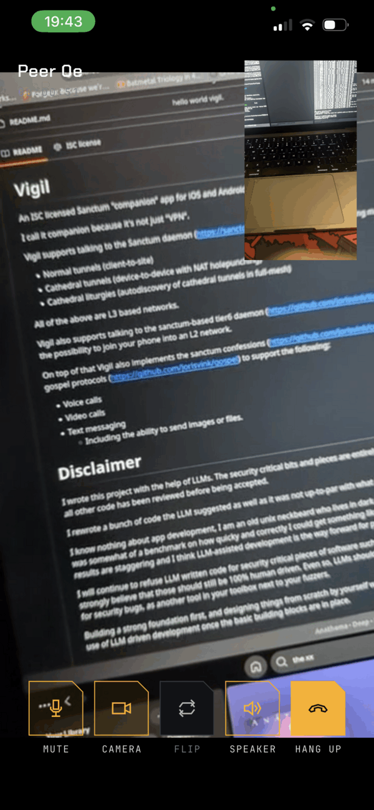

Vigil
Vigil is a full open-source Sanctum companion app for iOS and Android, using libkyrka, and is fully interoperable with sanctum or tier6. It is distributed as source-only.
Get VigilScreenshots






Modes
Vigil can talk to the sanctum daemon using one of the following modes:
| Mode | Description |
|---|---|
tunnel | A normal client-to-site tunnel towards a sanctum instance. |
cathedral | Device-to-device tunnels via a cathedral with NAT holepunching. |
liturgy | Automatic discovery of cathedral tunnels in a full-mesh, see liturgies. |
Or it can talk to the tier6 daemon, giving you the possibility to join your phone into an L2 network.
Calls and messages
On top of tunnels, Vigil implements the sanctum confessions and gospel protocols to support:
- Voice calls
- Video calls
- Text messaging, including the ability to send images or files
Building
Android
Make sure Android Studio is installed. Can be compiled on Linux or macOS.
$ make android $ adb install -r app/build/app/outputs/flutter-apk/app-release.apk
iOS
Requires macOS with Xcode installed.
$ echo "DEVELOPMENT_TEAM = <team>" > app/ios/Team.xcconfig
$ make ios
$ xcrun devicectl list devices
$ xcrun devicectl device install app --device <device> \
app/build/ios/iphoneos/Runner.app
Configuration
Vigil is configured using a short text configuration, usually imported as a QR code. Below are a few examples.
A standard tunnel
vigil 1 instance office tunnel 10.77.0.2/24 1408 peer vpn.example.com:4500 secret <64 hex characters> route 0.0.0.0/0 dns 10.77.0.1
A tunnel using a cathedral
vigil 1 instance laptop tunnel 10.88.0.2/24 spi 0c0d kek <64 hex characters> cathedral cathedral.reliquary.se:4469 cathedral_id 5eb2411f cathedral_flock 493abf95a07e0c00 cathedral_secret <64 hex characters> cathedral_cosk <128 hex characters>
A liturgy via a cathedral
vigil 1 instance mesh mode liturgy spi 0c kek <64 hex characters> liturgy_group 0001 liturgy_prefix 172.31.0.0 cathedral cathedral.reliquary.se:4469 cathedral_id 5eb2411f cathedral_flock 493abf95a07e0c00 cathedral_secret <64 hex characters> cathedral_cosk <128 hex characters>
A tier6 configuration
vigil 1 instance flock mode liturgy tier6 yes spi 0c kek <64 hex characters> cathedral cathedral.reliquary.se:4469 cathedral_id 5eb2411f cathedral_flock 493abf95a07e0c00 cathedral_secret <64 hex characters> cathedral_cosk <128 hex characters>
Do not specify a tunnel ip if you want tier6 to auto-assign addresses.
A gospel configuration
vigil 1 instance calls mode gospel spi 0c kek <64 hex characters> liturgy_group 0001 cathedral cathedral.reliquary.se:4469 cathedral_id 5eb2411f cathedral_flock 493abf95a07e0c00 cathedral_secret <64 hex characters> cathedral_cosk <128 hex characters>
Common options
| Option | Description |
|---|---|
shroud | Turn shroud off or on. |
dns | Configures the DNS server to use. |
mtu | Set to auto for MTU discovery. |
route | Add explicit routes over the tunnel. |
block_ipv6 | Defaults to yes when you have a 0.0.0.0/0 route. |
Generating a QR code
The tools/vigil-config shell script can take existing
sanctum key material and convert them into a vigil configuration
shown as a QR code or plaintext configuration.
$ ./tools/vigil-config cathedral -i laptop -c cathedral.reliquary.se:4469 \
-f 493abf95a07e0c00 -x 0c0d -k kek-0x0c -I 5eb2411f \
-C id-5eb2411f -K cosk-5eb2411f -t 10.88.0.2/24 -q